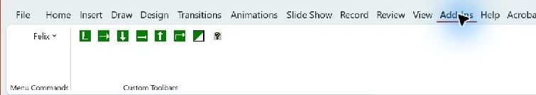
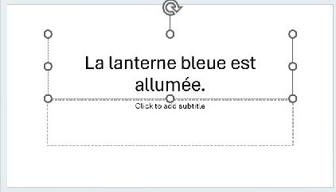

9. Using Felix from PowerPoint¶
For a quick introduction to using Felix from Microsoft PowerPoint, see the Quick-start Tutorial Using MS PowerPoint.
Install the optional PowerPoint add-in as described in Choosing Components. In PowerPoint, open the ribbon’s Add-ins tab to find the Felix menu and toolbar.

The Felix menu and toolbar on PowerPoint’s Add-ins tab
There are two “modes” in the PowerPoint interface: Translation Mode and Review Mode. When Microsoft PowerPoint first launches after installing Felix, the interface is in Translation Mode.
To replace source text with a stored translation, leave the source text selected before choosing Get Translation. If the selection is collapsed, PowerPoint inserts the translation at the cursor.

The PowerPoint title after inserting the stored translation
Sub-sections